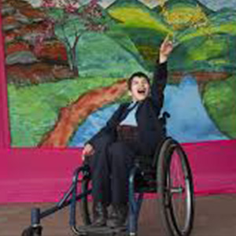

¿Cuántas veces has juzgado sin conocer?
Transformando pensamientos
¿Qué veré en la página?
Durante tu navegación en este sitio podrás encontrar distintas actividades relacionadas con el tribalismo en la sociedad, así como contenido que invita a reflexionar sobre la manera en la que solemos juzgar a las personas sin conocerlas realmente. A través de ejemplos y dinámicas interactivas, se busca evidenciar cómo muchas veces nuestras opiniones se basan únicamente en aspectos superficiales como la forma de vestir, la manera de hablar o los gustos personales.
Además, la página incluye pequeños juegos y espacios de reflexión en los que podrás cuestionar tus propias reacciones y analizar si estás actuando desde una perspectiva justa o si, sin darte cuenta, estás cayendo en prejuicios. La intención no es señalar o juzgar, sino generar conciencia y fomentar una actitud más abierta y crítica hacia la forma en que percibimos a los demás.
Nuestro propósito al desarrollar este sitio es concientizar a la comunidad estudiantil sobre la importancia de tener una visión más amplia y empática. Se busca promover una convivencia más sana, en la que las diferencias no sean motivo de separación, sino una oportunidad para aprender, dialogar y conocer nuevas perspectivas. De esta manera, se invita a los usuarios a salir de su zona de confort, cuestionar sus ideas y atreverse a convivir con personas con las que, en un principio, quizá no se identificarían.
¿Qué tan rápido juzgas?
Responde el quiz para saber como funciona tu juicio ante los demás din conocerlos
Juicio en 5 Segundos
Mira una foto y en menos de 5 segundos responde las preguntas para conocer tus prejuicios

Rompe Una Etiqueta
En la universidad y en internet, es fácil que todo se convierta en etiquetas: “los de tal carrera”, “los inteligentes”, “los flojos”, “los raros”, “los populares”. Sin darnos cuenta, empezamos a encasillarnos y a ver a los demás a través de esas ideas.
El problema es que esas etiquetas simplifican demasiado lo que somos. Reducen personas complejas a una sola palabra, y muchas veces generan divisiones que no deberían existir.
Piensa en una etiqueta que te hayan puesto dentro de tu entorno académico o en línea. Tal vez algo que no te representa del todo, o que solo muestra una parte de ti.
Ahora escríbela… y luego rompe con ella.
Cuéntanos quién eres realmente, más allá de ese estereotipo. Porque nadie es solo una etiqueta.
Un poco más de información del Tribalismo
El tribalismo en la comunidad universitaria
El tribalismo es la tendencia de las personas a formar grupos con quienes comparten ideas, intereses o características similares, generando un sentido de pertenencia. Aunque esto es algo natural, también puede provocar división cuando se rechaza o se juzga a quienes pertenecen a otros grupos.
En las universidades, el tribalismo puede verse reflejado en la separación entre carreras, ideologías, estilos de vida o círculos sociales. En internet, este fenómeno se intensifica debido a los algoritmos de plataformas como Instagram o TikTok, que suelen mostrarnos contenido similar a lo que ya pensamos, creando “burbujas” donde es difícil ver otras perspectivas.
Este comportamiento sucede porque las personas buscan sentirse aceptadas y seguras dentro de un grupo, pero también porque es más fácil relacionarse con quienes piensan parecido. Sin embargo, esto puede limitar la empatía y el entendimiento hacia los demás. Para mejorar la convivencia, es importante fomentar el respeto, la apertura al diálogo y la curiosidad por conocer otras realidades. En la universidad, esto puede lograrse participando en actividades con personas diferentes, escuchando opiniones diversas y evitando prejuicios. En internet, implica cuestionar lo que vemos, evitar generalizaciones y recordar que detrás de cada perfil hay una persona con una historia única.
Comprender el tribalismo no significa eliminar nuestras diferencias, sino aprender a convivir con ellas de manera más empática e inclusiva.